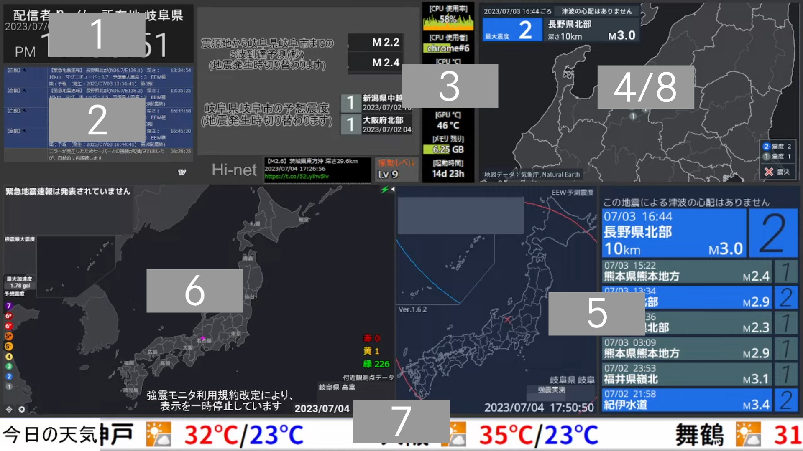
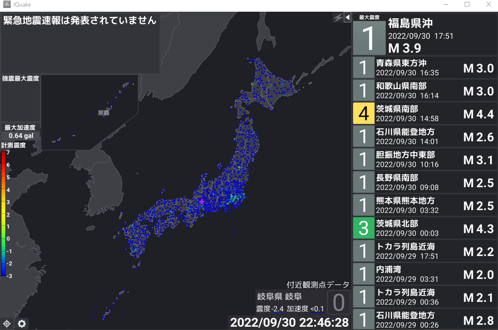
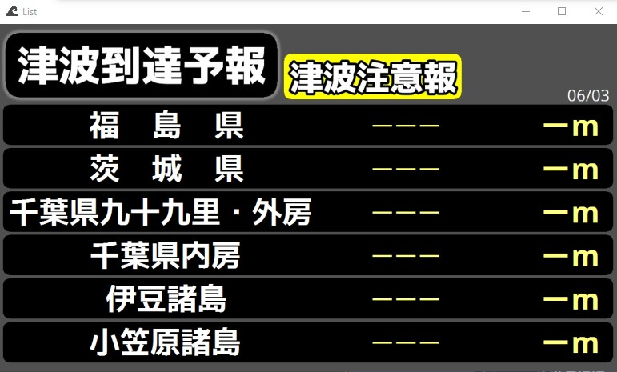
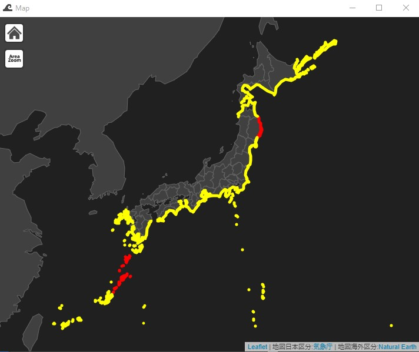
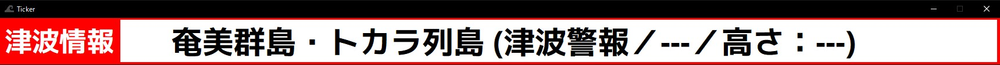
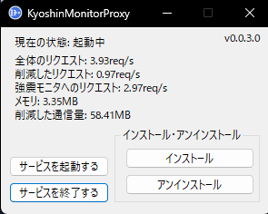
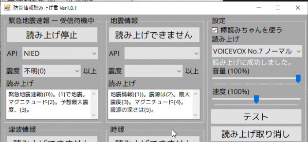
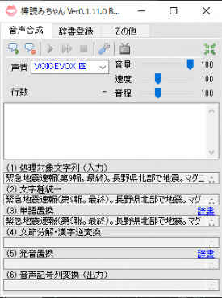
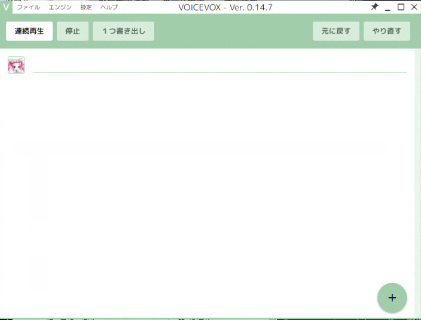
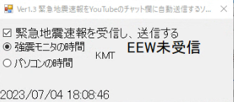

使用ソフト一覧【2023年07月緊急版】
配信画面キャプチャ
1.専用時計
現在時刻を表示するソフト

2.MultiCommentViewer
配信に投稿されたコメントを配信内に表示するソフト
Download Link
3.Mooシステムモニター
Systemの使用状況をリアルタイムで表示するソフト
Download Link
4.EarthquakeMap (2023年07月04日より強震モニタ利用規約改定により利用停止中)
地震マップ、EEW予測震度を表示するソフト
Download Link
4.Quarog
地震マップ、EEWを表示するソフト
Download Link
5.kiwimonitor (2023年07月04日より強震モニタ利用規約改定により緊急地震速報の表示停止)
表示画像： EEW予想震度 P/S波・地震情報
今後の動向によっては別のソフトウェアを利用・配信画面から削除する可能性があります。
Download Link
6.JQuake (強震モニタ利用規約改定により地表リアルタイム震度の表示を停止中)
表示画像： 地表リアルタイム震度・震度0.5以上震度アイコン EEW予測震度に一時的に設定しております
津波情報発表時：津波情報線
※本放送はdmdataのJQuake専用プランを使用しています。
Download Link 7.ティッカーくん
天気などを表示するソフト
Download Link
8.Tsunami List Viewer Ver3
津波予報などを表示するソフト
※ティッカーウィンドウは情報が多い場合のみ使用します。
  9.Open Broadcaster Software（OBS）
配信ソフト
Download Link
10.Reduce Memory
メモリー開放ツール
Download Link
11.P2P地震情報
Download Link
12.KyoshinMonitorProxy
強震モニタへの負荷を軽減するソフト
Download Link 13.防災情報読み上げツール
緊急地震速報の読み上げをするソフト
14.棒読みちゃん
主にゆっくりの声を生成するのに使われているソフト
Download Link 15.VOICEVOX
無料で使える高性能読み上げツール
※本放送で使用しているキャラ：VOICEVOX：No.7 (ノーマル)
Download Link 16.チャットに緊急地震速報を送信するBOT
チャットに緊急地震速報を送信するソフト
